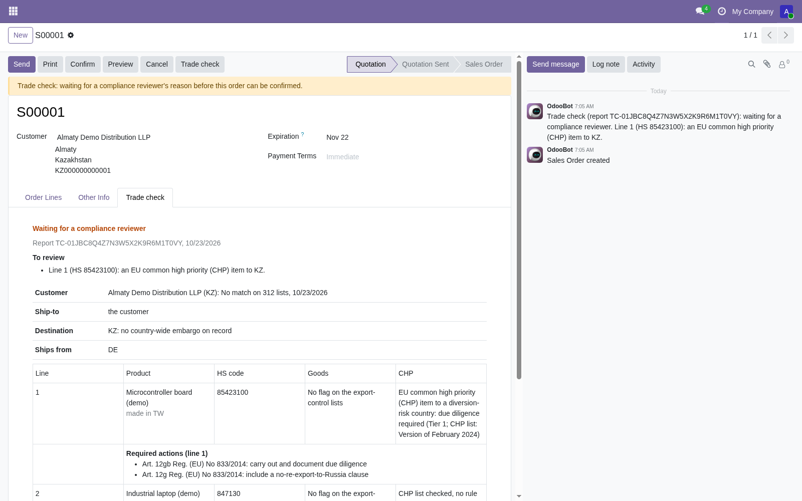
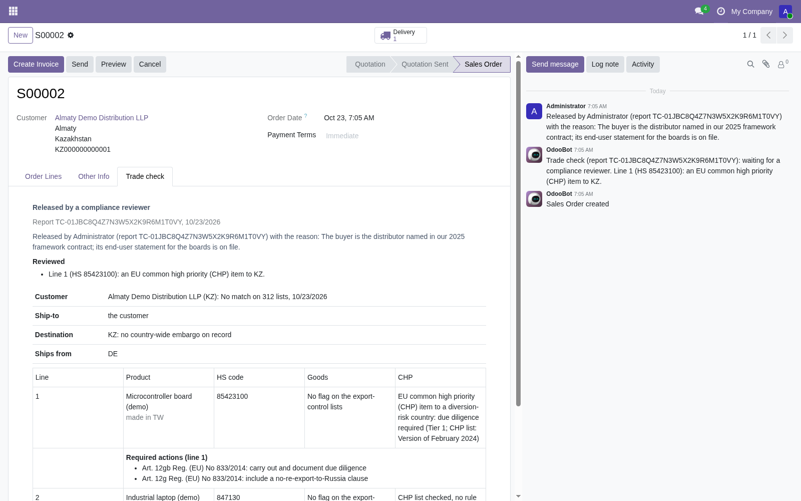

Checks every sales order before you confirm it: the customer, the destination and the goods.
The customer and the delivery address are screened against sanctions lists, the delivery country against embargoes and the Russia rules, and every order line against export controls by its HS code. Odoo already holds all three, so nobody types anything.

The customer and the ship-to name, screened against more than 300 sanctions lists, among them OFAC SDN, the EU consolidated list, UK OFSI and the UN lists. A result reads "No match on N lists, with the date", "Potential match" or "Listed".
The delivery country, against embargoes and country export restrictions. For an EU seller, a buyer outside the EU's partner countries is where the Russia rules of Regulation 833/2014 apply.
Every order line by the product's HS code and country of origin, against export controls and dual-use lists. Common high priority (CHP) items to a country outside the partner list are flagged for the due diligence Art. 12gb asks for, with the Art. 12g no-re-export clause as the action.
| Result on the order | What Odoo does |
|---|---|
| Listed party, embargoed destination or prohibited goods | Confirm is refused, with the reason on the order. |
| Potential match, licence may be required, or a CHP item to a diversion-risk country | The order waits until a user in the group "Ohmyfin: compliance reviewer" records a written reason. The reason and the report id go to the chatter. |
| An order line without an HS code | Shown as "not goods-screened", never as a pass, with a link to the products that miss a code. |
| The check cannot run (timeout, quota) | The order goes through with "not screened" and the reason in the chatter, unless you switch on "refuse when the check cannot run". |
A goods result is a flag to check the item's classification. It is never a licence determination: an HS code does not decide a dual-use control, the item's technical parameters do.
